ともだち
作品紹介
- あらすじ
-
でくのぼうは、とっても大きい。そしてクラスのいじめられっ子。クラスの遠足の日、たいしょう君は、古い橋から落ちてしまった。その時、たいしょう君にいじめられていたでくのぼうは……。
- 制作年
- 2013
- 脚本
- 岩松香奈絵
- 内堀宏美
- 画
- 岩松香奈絵
- 内堀宏美
- 場面
- 12場面
ともだち 動画（準備中）
ともだち 画・脚本
#1
ともだち
ここは、とある小学校のとある教室。
このクラスにはとても大きな少年がいます。
あだなは“でくのぼう”
#2
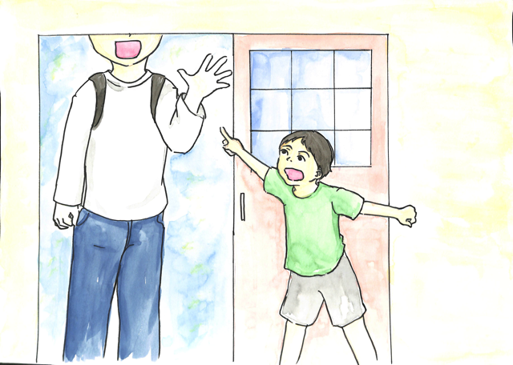
でくのぼうは、クラスのリーダーたいしょう君にいつもバカにされています。今日も朝から、
たいしょう「やーいでくのぼう、ぶつかってんのー」
とはやしたてられています。
#3
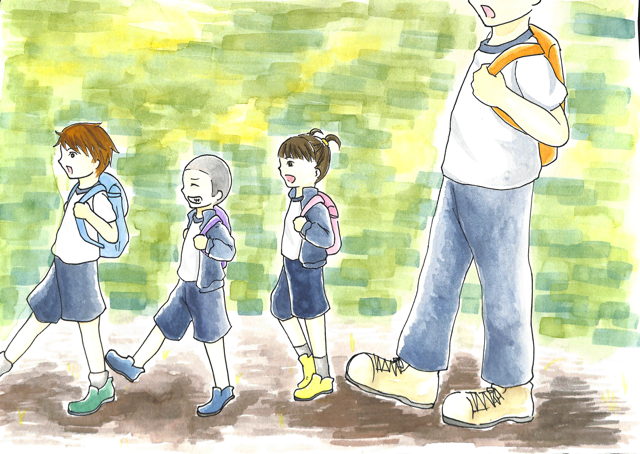
そんなある日。
クラスの遠足で山へハイキングに行くことになりました。
小学校を出発し、野を越え、山を越え……
#4
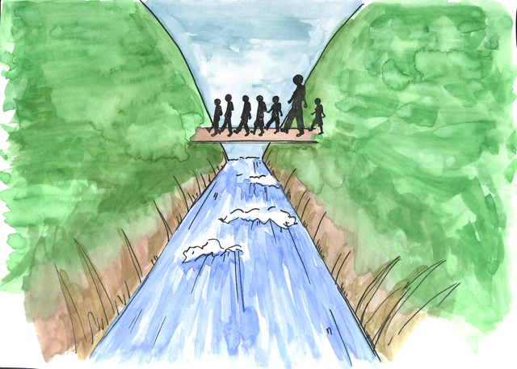
端にさしかかりました。
木で出来た端は古く、みんなが渡る度にギシギシといっています。
（間）
その時、
ギシ（半分抜く）
ギシ（もう少し抜く）
（さっと抜く）
#5
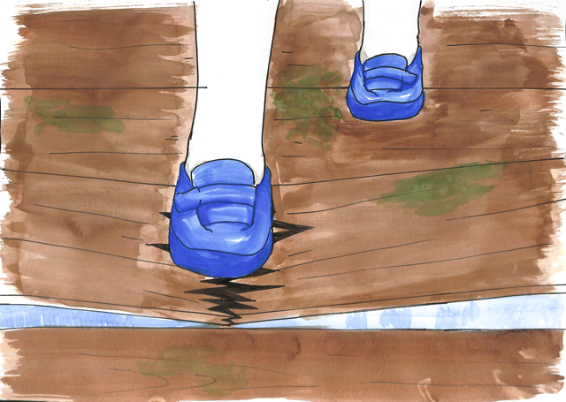
バキッ！！
（間）
（さっと抜く）
#6
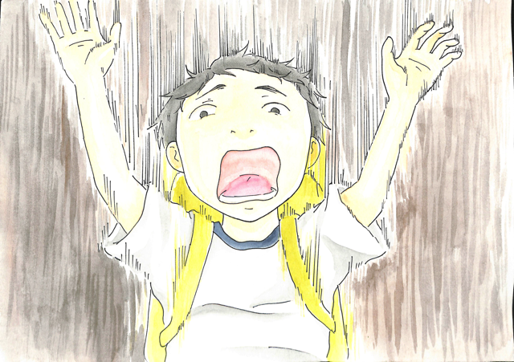
たいしょう「うわーーーー！！」
なんと、古くなっていた橋が、ついに落ちてしまったのです。
（＊注 なんと、ふるくなっていた橋が、ついにおちてしまったのです。を除き、#9の「あ」まで「あーーーーー」と叫び続けながら、抜いていく、という演じ方もあります。）
#7
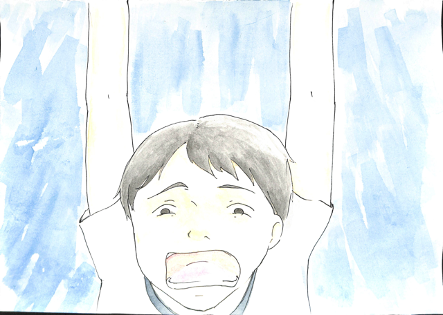
男の子「たいしょうがおちた！」
女の子「たいしょう君！！！？」
#8
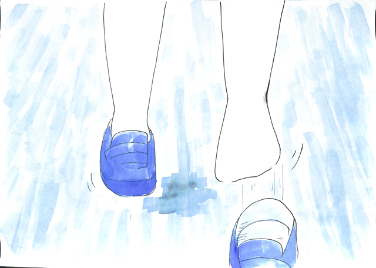
（裏書きはありません。）
#9
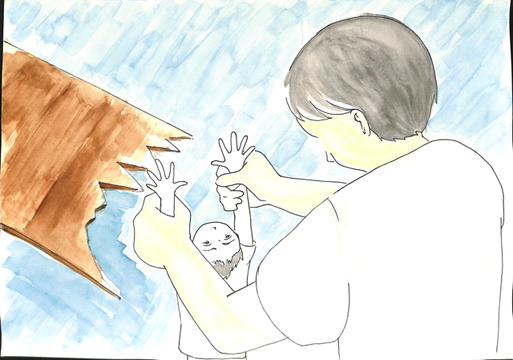
あ
#10
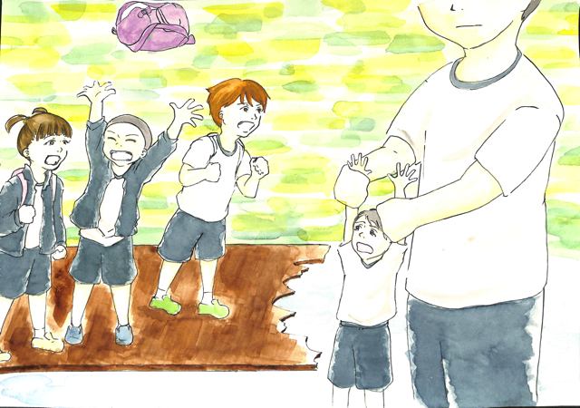
おーーーー
「すごいぞ、でくのぼう！！」
「でくのぼうがたいしょうを助けたわ」
「よくやった、かっこいいぞ、でくのぼう」
#11
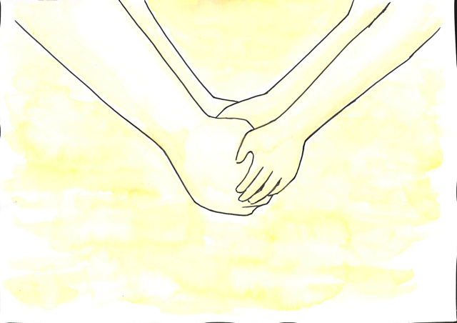
いじめていた僕をたすけてくれるなんて…
君は体だけじゃない、心まででっかいんだなぁ！！！
ありがとう、でくのぼう
#12
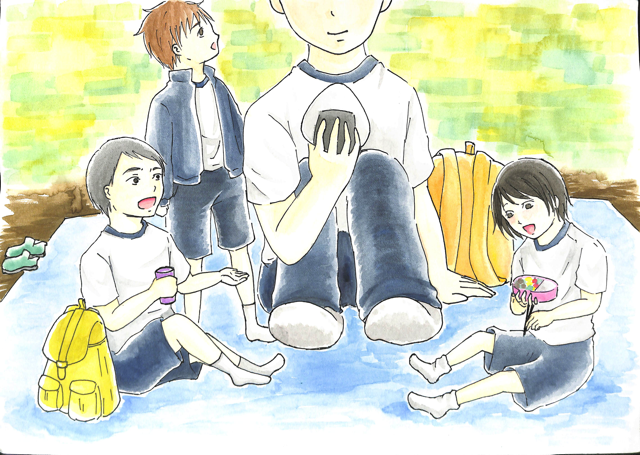
こうして、でくのぼうとたいしょう君は、仲良くなり、お互いに一番の友だちになりました。
おしまい
ともだち PDF
以下のリンクから、『ともだち』のPDFデータをダウンロードできます。
ダウンロードして印刷し、厚紙などに貼ってご利用下さい。